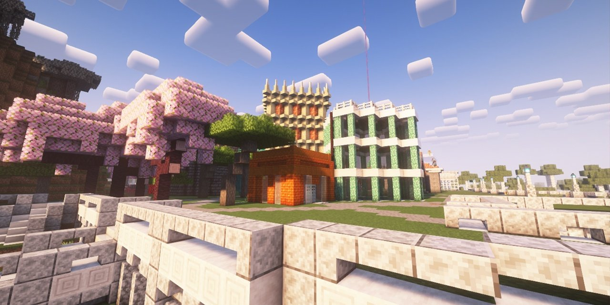
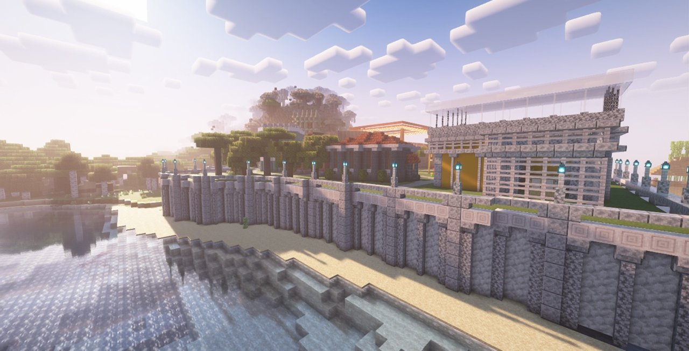
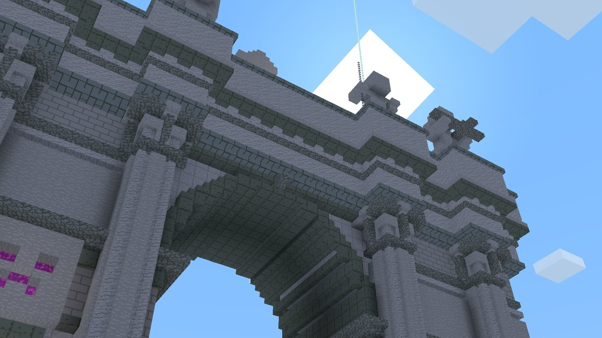
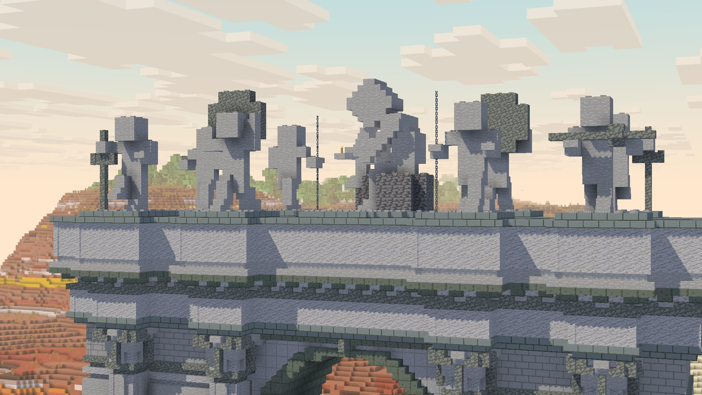
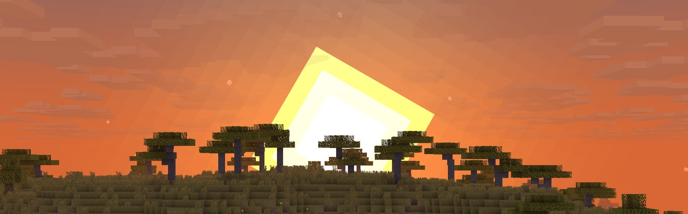

BEBRA-MAXIMUM
Кросс-платформенный Minecraft-сервер. Java и Bedrock живут в одном мире: ваниль без привата, стартовых наборов и доната.
Сколько людей в игре
Java Edition
нет данных- Игроков
- —
- Версия
- —
- Отклик
- —
Bedrock Edition
нет данных- Игроков
- —
- Версия
- —
- Отклик
- —
Фотографии с сервера
Скриншоты игроков. Нажмите на любую, чтобы открыть во весь экран.





О сервере
BEBRA-MAXIMUM — небольшой сервер, который делают несколько человек для таких же игроков, а не студия с бюджетом. Ставка на ваниль: никаких телепортаций, стартовых наборов и доната — до всего доходишь сам, и именно это здесь считается нормальным.
Плагинов минимум, чтобы не ломать ванильный стиль. Из своего — медные данжи и особые ключи к ним.
Главное отличие — Java и Bedrock играют вместе. Можно сидеть за компьютером, а друг рядом — с телефона, и вы будете в одном мире. Серверу год, годовщина 6 сентября.
Что внутри
Строительство
Главное занятие на сервере. Приватов нет, так что место под стройку выбираешь сам.
Медные данжи
Ломать их нельзя — мусора от других не будет. Лут в бочках обнуляется раз в день, так что ходить есть смысл каждый день.
Особые ключи
Открывают хранилища в данже повторно, не дожидаясь обнуления. Покупаются за голоса за сервер, скрафтить нельзя.
Java + Bedrock
Один мир на все платформы: компьютер, телефон, планшет.
Без доната и китов
Нет ни магазина за реальные деньги, ни стартовых наборов, ни привата. Всё, что есть, добыто руками.
Как зайти
Три шага, дальше всё как обычно.
Запустите нужную версию
Java — обычный Minecraft с компьютера. Bedrock — с телефона, планшета или Windows.
Добавьте сервер
Адрес один и тот же — bebra-maximum.ru. Порт зависит от платформы, смотрите таблицу ниже.
Заходите
Первый вход — в общий мир. Дальше выбираете место под стройку и строитесь.
Где мы общаемся
Анонсы обновлений, скриншоты и поиск напарников — всё там.